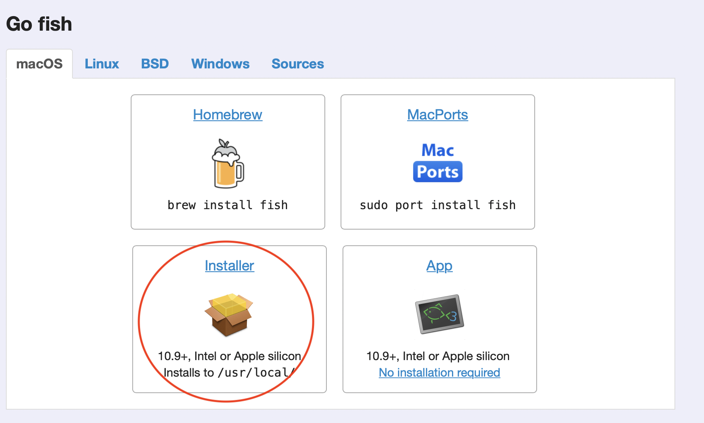
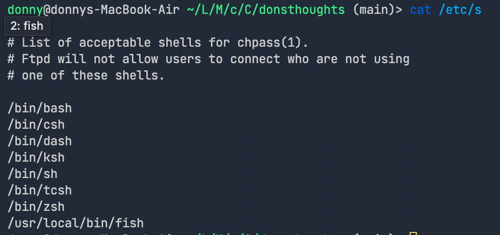

Recently I have decieded to change my default shell to fish. For the following reasons.
-
Z shell was getting slower due to various packages that I rarely use.
-
Wanted to keep a simple configuration file in my
./configfolder. -
Did not want to spend time on configuration.
Well, to tell the truth, zsh was blazing fast in my M1 macbook air, but on my other intel macs the startup time took 2~3 seconds, which was apparently the amount of time that can drive you crazy.
Troubleshooting
Since homebrew is natively supported on Apple Silicon architectures, I installed fish using, brew install fish. And it worked fine. However, when I added the path of the installed fish(/opt/homebrew/fish) to /etc/shells it did not work, giving me chsh: fish: non-standard shell.
How to install fish to your m1 mac
-
Go to the fish homepage and download the installer. 
-
Check your
fishpath. It should be/usr/local/bin/fish.
|
|
- Append the
fishpath to your/etc/shellswith sudo permissions.
|
|
Then the file would look like this. 
- Use
chshcommand to change default shell.
|
|
If you exit your current shell and restart your terminal then it would open running the fish shell.